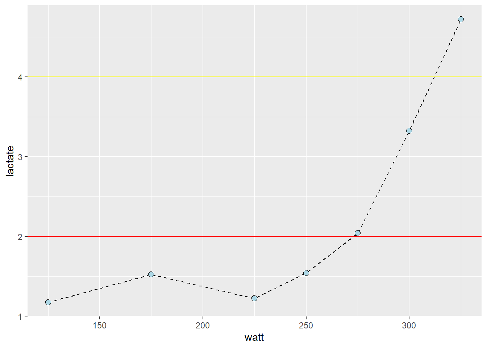

cyclingstudy %>%
# Select columns needed for analysis
select(subject, group, timepoint, lac.225:lac.375) %>%
# Only one participant and time-point
filter(timepoint == "pre", subject == 10) %>%
# Pivot to long format data using the lactate columns
pivot_longer(names_to = "watt",
values_to = "lactate",
names_prefix = "lac.",
names_transform = list(watt = as.numeric),
cols = lac.225:lac.375) %>%
# Filter NA's from the data
filter(!is.na(lactate)) %>%
# Plot the data, group = subject needed to connect the points
ggplot(aes(watt, lactate, group = subject)) +
geom_line(lty = 2) +
geom_point(shape = 21, fill = "lightblue", size = 2.5) +
# Adding straight lines at specific values for 2 og 4 mmol L-1
geom_hline(yintercept = 2, color = "red") +
geom_hline(yintercept = 4, color = "yellow")regression_model
Assignment 2
Task 1: Undersøke intensiteten på 2mmol L-1 og 4mmol L-1
Task 2: Lage en “calibration curve” som viser effektiviteten av qPCR reaksjonen
#Task 2
###Her har jeg ikke helt skjønt hva vi skal.....
poolsample1 = read_excel("poolsample1.xlsx")%>%
select(1, `Avg CT`, `Log (sample quan)`) %>%
rename("Fortynningsserie" = 1,
"Snitt CT" = `Avg CT`,
"Log" = `Log (sample quan)`)%>%
print()New names:
• `` -> `...1`# A tibble: 6 × 3
Fortynningsserie `Snitt CT` Log
<chr> <dbl> <dbl>
1 1/1 27.5 0
2 1/10 30.1 -1
3 1/100 34.5 -2
4 1/1000 NA -3
5 1/100000 NA -4
6 1/100000 NA -5Pool_sample_2 = read_excel("Pool sample 2.xlsx") %>%
select(1, `Avg CT`, `Log (sample quan)`) %>%
rename("Fortynningsserie" = 1,
"Snitt CT" = `Avg CT`,
"Log" = `Log (sample quan)`)%>%
print()New names:
• `` -> `...1`# A tibble: 6 × 3
Fortynningsserie `Snitt CT` Log
<chr> <dbl> <dbl>
1 1/1 28.7 0
2 1/10 30.6 -1
3 1/100 29.4 -2
4 1/1000 NA -3
5 1/100000 NA -4
6 1/100000 NA -5# Data fra pool sample 1 (replace with your actual data)
observed_values_1 <- c(27.5, 30.1, 34.5)
true_values_1 <- c(0, -1, -2)
# Create a scatter plot
plot(true_values_1, observed_values_1, main="Calibration Curve", xlab="True Values", ylab="Observed Values")
# Add a line of best fit
abline(lm(observed_values_1 ~ true_values_1), col="red")
# Optionally, add more formatting or annotations to the plot#Data fra pool sample 2
# Sample data (replace with your actual data)
observed_values_2 <- c(28.7, 30.6, 29.4)
true_values_2 <- c(0, -1, -2)
# Create a scatter plot
plot(true_values_2, observed_values_2, main="Calibration Curve", xlab="True Values", ylab="Observed Values")
# Add a line of best fit
abline(lm(observed_values_2 ~ true_values_2), col="red")# Optionally, add more formatting or annotations to the plotTask 3
Vi skal undersøke om det er en sammenheng mellom økt mager kroppsmasse (LBM) og 3 repetisjoner maks i knebøy (3RM squat).

| term | estimate | std.error | statistic | p.value |
|---|---|---|---|---|
| (Intercept) | 37.048 | 19.705 | 1.88 | 0.071 |
| DXA_LBM_T1 | 1.458 | 0.302 | 4.829 | 4.421 × 10−5 |
I tabellen over ser vi sammenhengen mellom lean body mass og 3RM i knebøy.
Estimate: Dette viser stigningstallet. Vi ser at for hver kilogram LBM øker, vil 3RM i knebøy øke med 1,458kg.
Std.error: Standardfeil er et mål for hvor nøyaktig gjennomsnittet av en statistisk distribusjon representerer den sanne verdien. Jo lavere tallet er, jo mer pålitelig er gjennomsnittsestimatet. Tallet på 0,302 viser til en relativt lav spredning i gjennomsnittet.
Statistics: T-verdien er: \(\frac{stigningstallet}{standardfeil}\). T-verdien brukes til å vurdere signifikansen til hver koeffisient i regresjonsmodellen. Jo høyere t-verdien er, jo større sjanse er det for at det er en signifikant sammenheng mellom LBM og 3RM knebøy. en T-verdi på 4,8 viser til en svært liten sjansje for at sammenhengen er tilfeldig.
P-verdi: Viser til hvor stor grad vi kan anta at det er en signifikant sammenheng mellom den uavhengige og avhengige variablen. Hvis p-verdien er under 0,05 regnes det ofte som en signifikant sammenheng. Lavere P-verdi viser til lavere sjanse for at sammenhengen vi ser er tilfeldig. vår P-verdi på: 4.421 × 10−5 (0.00004), viser til en svært stor sammenheng mellom økning i LBM og 3RM knebøy.